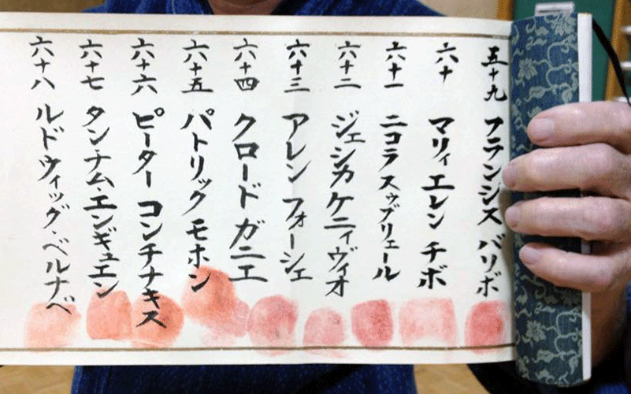
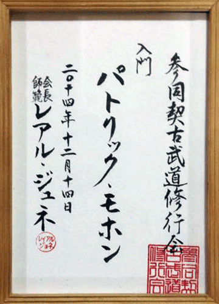

The makimono of Sandokai Kobudō Shugyokai
Provisional English translation — awaiting review and approval.
Luc Vanasse Senpai — Originally published: 2017-11-27
The makimono (巻物, or makemono in French), literally “a thing that is rolled up”, is a long sheet of paper rolled onto itself that unfolds horizontally or vertically. In Japan it is used as a support for paintings or calligraphy hung in the tokonoma (床の間). It is then called a kakejiku (掛軸) or kakemono (掛物), literally “a hanging thing”. This is the traditional form of mounting. It unrolls vertically.
In the particular case considered here, the makimono is a handwritten paper scroll that unfolds horizontally, from right to left. It is the equivalent of the book in the West. On these supports, the ancient schools of martial arts and martial ways (koryū) described their techniques and their own philosophy and spirituality.
A symbol of power, the makimono was how a master passed on his authority: he entrusted the scrolls to his closest student, the one he considered best able to contribute to the school's development. In this way, from Soke to Soke, the knowledge of the ancients has reached us. Even today, the person who holds a Ryū's makimono is regarded as the guardian of the discipline's orthodoxy.
In short, makimono are the memory of a Ryū, its technical and cultural archives. Members of a ryū also signed their membership on a makimono, leaving their thumbprint in accordance with the kappan ritual. Using a wakizashi blade, the candidate must make a small cut and draw enough blood to leave a print below their name.

The second Makimono of Sandokai Kobudo Shugyokai
The Sandokai dōjō also has its makimono. Although descriptions of techniques take the form of French texts published electronically or on printed, bound pages, we also possess traditional Japanese makimono. These contain the names of all members of the Sandokai Kobudō Shugyokai dōjō who have completed their Shugyō.
Since its founding in 1983, the dōjō has always ensured that new students go through a period of reflection, questioning their deep desire to join the dōjō. This is what we call Shugyō. Following this period of introspection, during which students receive the basic elements of their training, those who remain are officially accepted as full members of the dōjō.
During an acceptance ceremony, the student receives a plaque bearing Japanese calligraphy with their name, the name of the dōjō and its seal. They then place their thumbprint below their name, already written in calligraphy on the makimono, joining a long line of Shugyōsha. They are then considered Nyumon.

Nyumon calligraphy plaque
These makimono are the memory of the Sandokai Kobudō Shugyokai group. In traditional dojos, this memory is displayed on the walls as wooden plaques bearing the names of students who have studied there. As we do not own our premises, we have replaced the plaques that members receive upon acceptance with the makimono.
Together with other documents belonging to the dōjō, they will be handed to the chief instructor who succeeds the previous instructor and becomes their custodian. In this way, the teachings and values passed on by the masters will continue, and the tradition will be respected. Through this gesture, we will honour what sensei Genest's masters asked of him: faithfully pass on traditional teaching. ― Luc Vanasse Senpai